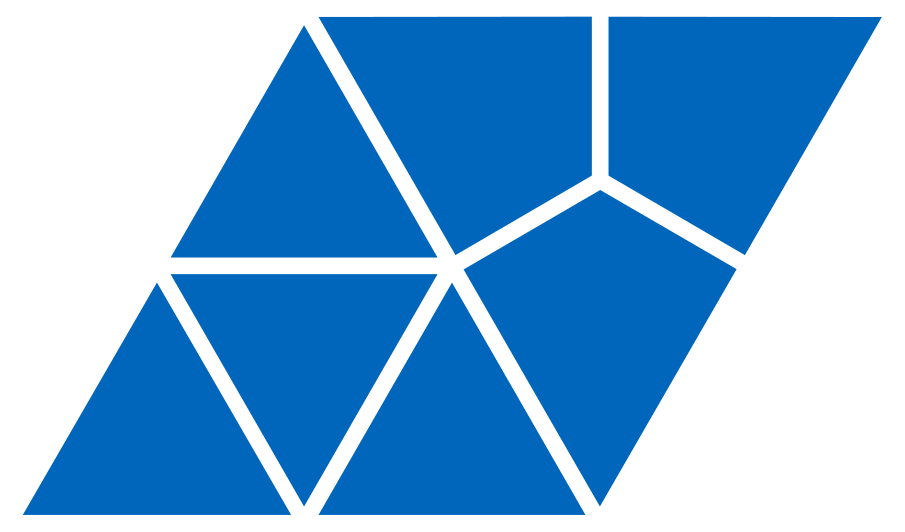

|  |
Polygon Mesh Processing Library
|
A common task in mesh processing is to improve the shape and size of the elements in a triangle mesh. Surface triangulations coming out of CAD programs, 3D modeling tools, or surface reconstruction can contain low quality elements not suitable for downstream processing. Low quality triangles typically include very long and skinny triangles or zero area faces.
Try for yourself:
PMP provides an implementation of the remeshing algorithm by Botsch and Kobbelt [2] that improves the quality of the triangles in your mesh. The algorithm is based on applying a series of local mesh modifications through edge splits, collapses, flips, as well as tangential smoothing. In addition to the standard uniform remeshing, PMP also provides a curvature-adaptive remeshing based on the paper of Dunyach et al. [10]
In this section, you will learn the basics of the algorithm and how to use it effectively for remeshing tasks.
In this section, we provide a basic overview of the algorithm. Please refer to the original publications [2] and [10] for details.
First of all, it is important to understand that our remeshing algorithm works in an incremental fashion. Starting from the original mesh the algorithm iteratively improves the shape and size of the triangles.
The optimization is performed by applying a series of local mesh modifications based on edge splits, edge collapse, edge flips, as well as tangential smoothing. An optional step projects mesh vertices back to the original surface to stay closer to the input shape.
In case of uniform or isotropic remeshing, the goal of the optimization are equally sized triangles as close as possible to regular triangles. Alternatively, adaptive remeshing employs a spatially varying sizing field that refines the mesh in regions of high curvature while using larger elements in flat regions.
Uniform remeshing creates a uniform (isotropic) triangulation with a given uniform target edge length for the whole mesh. The remeshing processing is controlled by three parameters:
edge_length: The target length each edge in the mesh should have after successful operation.iterations: The number of iterations to perform.use_projection: Enable projection of vertices back to the original input surface.A good default value for edge_length is the mean edge length which can be computed by the pmp::mean_edge_length() function.
Adaptive remeshing creates an adaptive mesh with varying element size depending on the local curvature of the input mesh. The remeshing is controlled by the following parameters:
min_edge_length: The minimum edge length.max_edge_length: The maximum edge length.approx_error: The maximum approximation error.iterations: The number of iterations.use_projection: Enable projection of vertices back to the original input surface.Both uniform and adaptive remeshing functions preserve feature edges present in the input mesh. They can be either detected by using the pmp::detect_features() function or by using the v:feature boolean vertex property and the e:feature boolean edge property.
The remeshing can be applied restricted to a subset of the mesh. Use the v:selected boolean property to choose the vertices to which the remeshing will be applied.